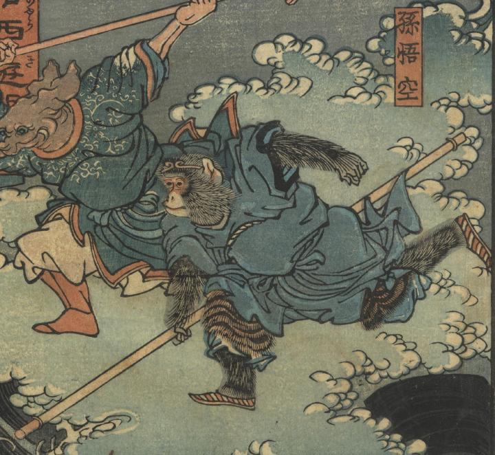

孫悟空が、如意棒（にょいぼう）を持って霊感王を追いかけている。
著作者：一魁芳年／出典：親書誌：U426_nichibunken_0351：通俗西遊記 霊感王 : 孫悟空 : 猪八戒；ツウゾク サイユウキ レイカンオウ : ソン ゴクウ : チョ ハッカイ／日付：2014／資源識別子：U426_nichibunken_0351_0001_0001
Copyright (c)2010- International Research Center for Japanese Studies, Kyoto, Japan. All rights reserved.